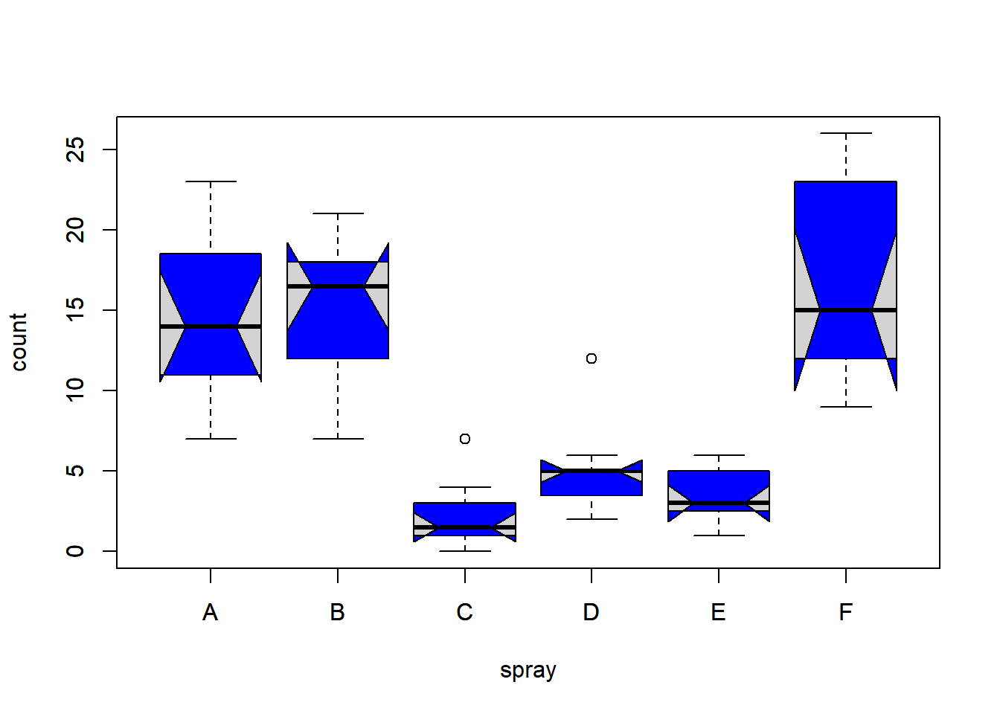
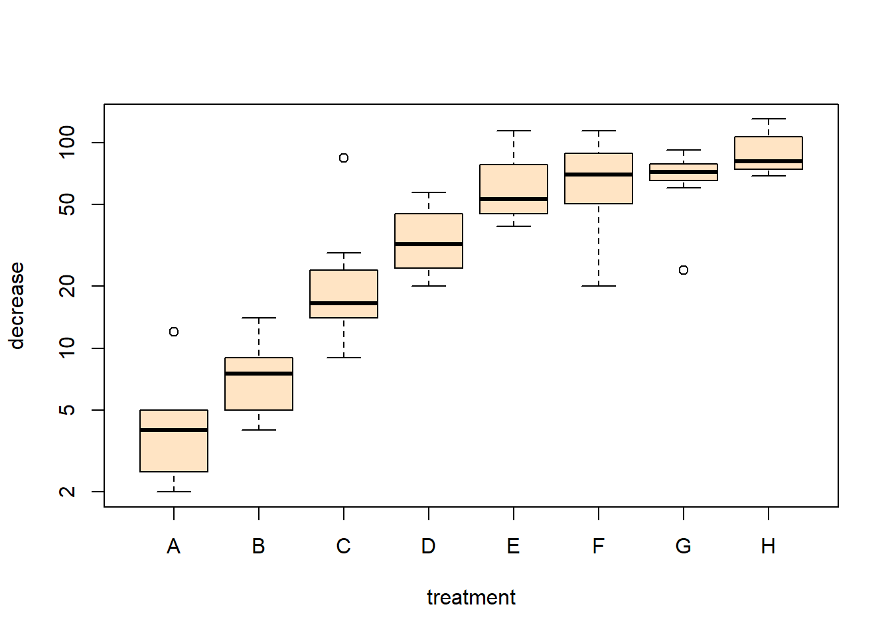
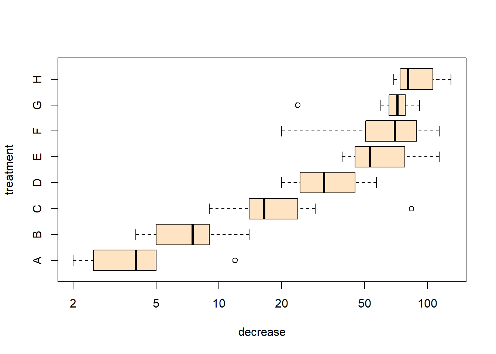
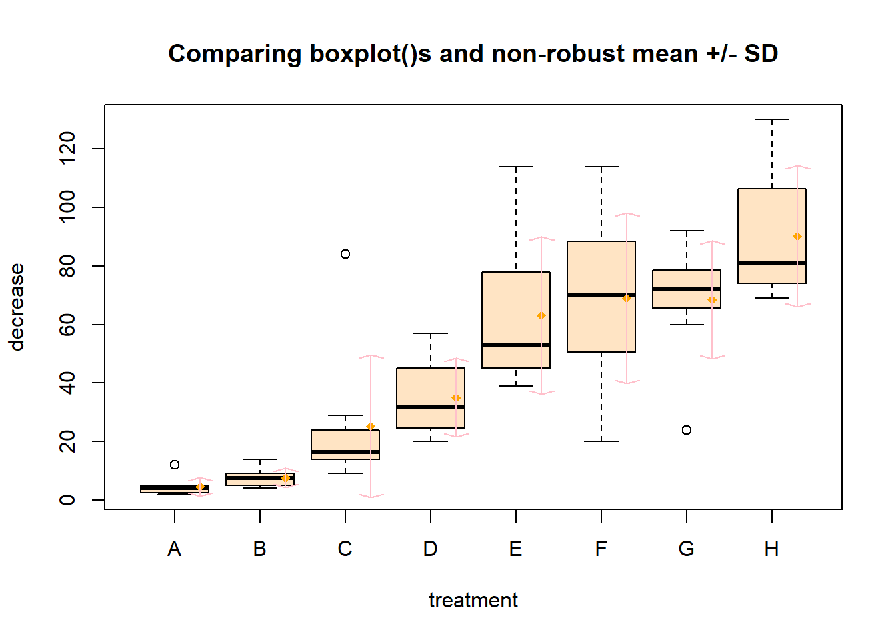
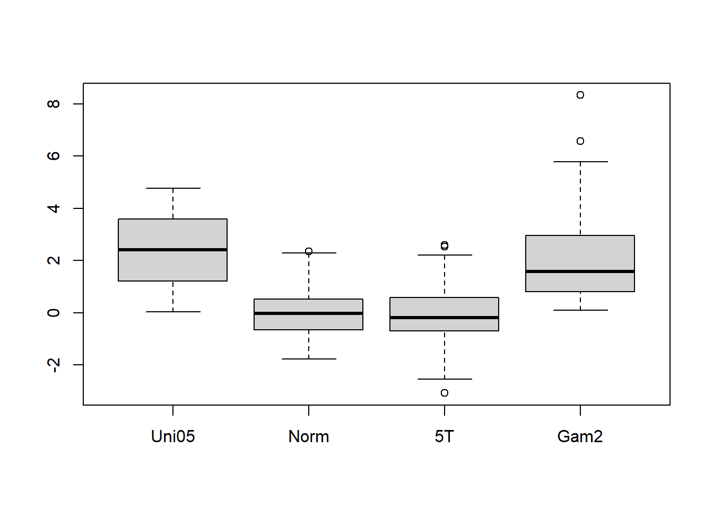
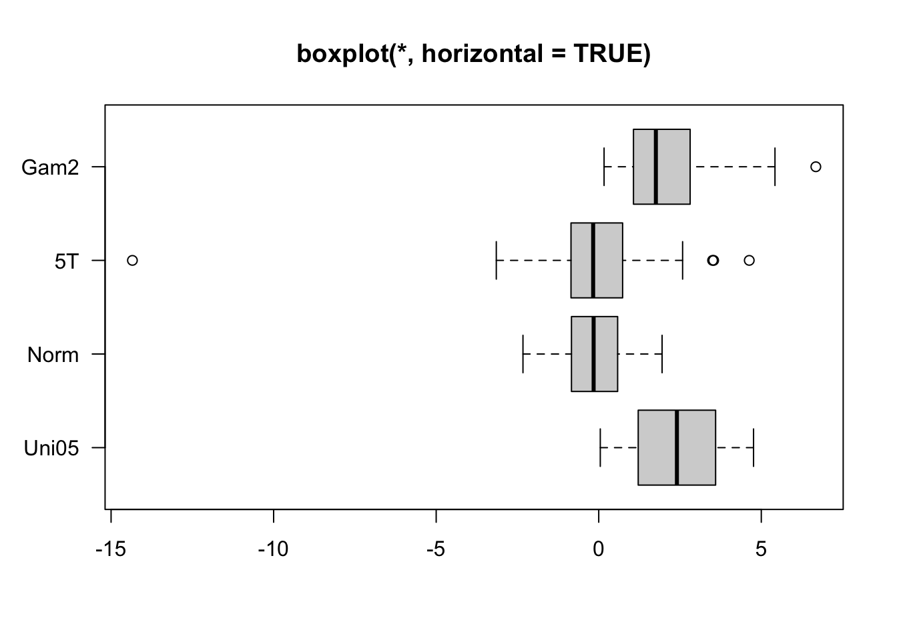
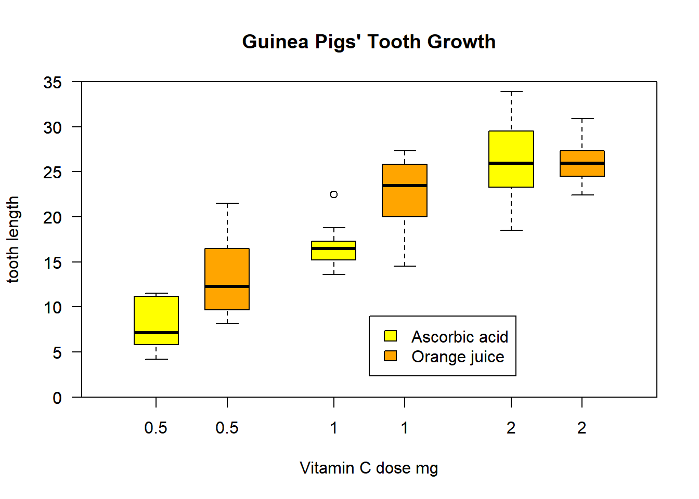
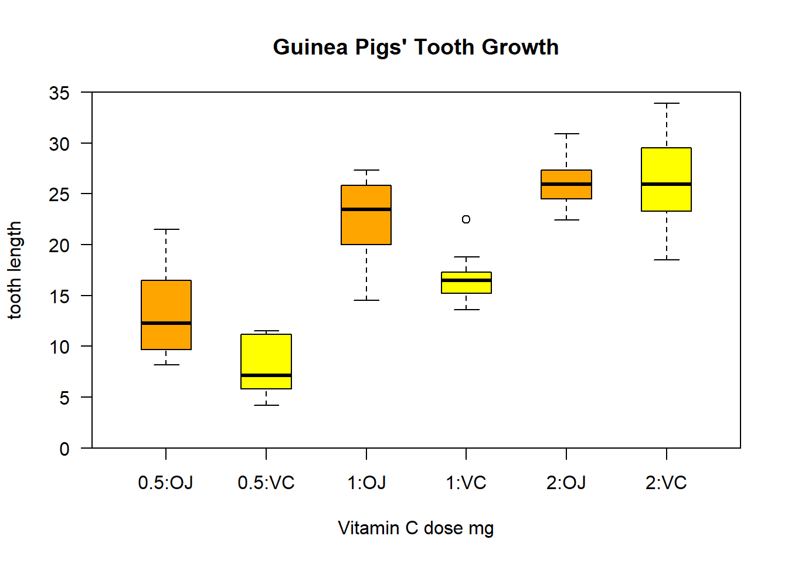

Code
getwd() # check your working directory[1] "C:/Users/ssclovic/OneDrive - Massey University/Documents/Teaching/161250 preparation/Data_Analysis_Course/workshops"Code
# setwd() # if you know the directory you want R to look inR is a software created in the 90s as an alternative to S, a propietary statsitical software. It was developed at the University of Auckland.
Rstudio is a Graphic User Interface (GUI) for R developed by Posit.
Both software are approved by the Libre software foundation
R and RStudioIf you have not installed R and RStudio, refer to the study guide for some instructions.
To start this workshop download the source from the class website. You can now save this to your computer and make notes in this document.
R basicsWorking directory
In RStudio, set the working directory under the Session menu. It is a good idea to start your analysis as a new project in the File menu so that the entire work and data files can be saved and re-opened easily later on.
[1] "C:/Users/ssclovic/OneDrive - Massey University/Documents/Teaching/161250 preparation/Data_Analysis_Course/workshops"R/RStudio as a calculator
In RStudio, use the File >> New File >> R Script menu to type or copy and paste the commands and execute them
Type 1+1 to see 2 on the console (or ->Run the code in RStudio).
Type a=1;b=2;a/b to see 0.5.
Note that semicolon separates various commands. It is optional to use them as long as you type the commands one by one as follows:
There are many built-in functions. Try the following.
27^3 sqrt(10) round(sqrt(10),2) abs(-4) log(10) exp(10) rnorm(100) mean(rnorm(100)) sd(rnorm(100))
You may wonder what was the base used for log(10). A help on this can be obtained by placing a question mark (?) before log as ?log or by help(log)
There are a few exceptions. The command ?if wont work but ?"if" will. In other words, ?"log" or help("log") are safer ways of getting help on “built-in” functions.
In RStudio, use the R Editor (menu File > New Script) to type the commands and submit them (shortcut: CNTRL+R).`
Why does this code not work?
Make a variable with a sequence of numbers between 1 and 10. Look up the function seq() in the help menu for tips.
The command example() will produce the available HELP examples, and will work for most functions. For example, try example(boxplot). You will see many boxplot examples such as the following:
boxplt> ## boxplot on a formula:
boxplt> boxplot(count ~ spray, data = InsectSprays, col = "lightgray")
boxplt> # *add* notches (somewhat funny here <--> warning "notches .. outside hinges"):
boxplt> boxplot(count ~ spray, data = InsectSprays,
boxplt+ notch = TRUE, add = TRUE, col = "blue")Warning in (function (z, notch = FALSE, width = NULL, varwidth = FALSE, : some
notches went outside hinges ('box'): maybe set notch=FALSE
boxplt> boxplot(decrease ~ treatment, data = OrchardSprays, col = "bisque",
boxplt+ log = "y")
boxplt> ## horizontal=TRUE, switching y <--> x :
boxplt> boxplot(decrease ~ treatment, data = OrchardSprays, col = "bisque",
boxplt+ log = "x", horizontal=TRUE)
boxplt> rb <- boxplot(decrease ~ treatment, data = OrchardSprays, col = "bisque")
boxplt> title("Comparing boxplot()s and non-robust mean +/- SD")
boxplt> mn.t <- tapply(OrchardSprays$decrease, OrchardSprays$treatment, mean)
boxplt> sd.t <- tapply(OrchardSprays$decrease, OrchardSprays$treatment, sd)
boxplt> xi <- 0.3 + seq(rb$n)
boxplt> points(xi, mn.t, col = "orange", pch = 18)
boxplt> arrows(xi, mn.t - sd.t, xi, mn.t + sd.t,
boxplt+ code = 3, col = "pink", angle = 75, length = .1)
boxplt> ## boxplot on a matrix:
boxplt> mat <- cbind(Uni05 = (1:100)/21, Norm = rnorm(100),
boxplt+ `5T` = rt(100, df = 5), Gam2 = rgamma(100, shape = 2))
boxplt> boxplot(mat) # directly, calling boxplot.matrix()
boxplt> ## boxplot on a data frame:
boxplt> df. <- as.data.frame(mat)
boxplt> par(las = 1) # all axis labels horizontal
boxplt> boxplot(df., main = "boxplot(*, horizontal = TRUE)", horizontal = TRUE)
boxplt> ## Using 'at = ' and adding boxplots -- example idea by Roger Bivand :
boxplt> boxplot(len ~ dose, data = ToothGrowth,
boxplt+ boxwex = 0.25, at = 1:3 - 0.2,
boxplt+ subset = supp == "VC", col = "yellow",
boxplt+ main = "Guinea Pigs' Tooth Growth",
boxplt+ xlab = "Vitamin C dose mg",
boxplt+ ylab = "tooth length",
boxplt+ xlim = c(0.5, 3.5), ylim = c(0, 35), yaxs = "i")
boxplt> boxplot(len ~ dose, data = ToothGrowth, add = TRUE,
boxplt+ boxwex = 0.25, at = 1:3 + 0.2,
boxplt+ subset = supp == "OJ", col = "orange")
boxplt> legend(2, 9, c("Ascorbic acid", "Orange juice"),
boxplt+ fill = c("yellow", "orange"))
boxplt> ## With less effort (slightly different) using factor *interaction*:
boxplt> boxplot(len ~ dose:supp, data = ToothGrowth,
boxplt+ boxwex = 0.5, col = c("orange", "yellow"),
boxplt+ main = "Guinea Pigs' Tooth Growth",
boxplt+ xlab = "Vitamin C dose mg", ylab = "tooth length",
boxplt+ sep = ":", lex.order = TRUE, ylim = c(0, 35), yaxs = "i")
boxplt> ## more examples in help(bxp)
boxplt>
boxplt>
boxplt> Explore the help menu for the function boxplot. What line of code can you use to access this file?
Write code to generate an example of the function boxplot using a built in dataset InsectSprays. You can use ?InsectSprays to find out more about this data.
How would you generate a horizontal boxplot? Use the help menu to find the argument you might need to change and what you would change it to. Explain in words and then in code.
Use your answers to the previous three exercises to write a short description of what the function boxplot does. Include what information you need to put into the function and what you might expect it to return.
So far we have seen base R. These are the built in functions available on R. Since R is a free computing resource people have developed additional functions which they package in a library. Majority of libraries are housed on CRAN and you can install them using the function install.packages().
tidyverseSo we will be largely using the tidyverse suite of packages; see https://www.tidyverse.org/.
Let’s load that package now:
Warning: package 'tidyverse' was built under R version 4.5.3Warning: package 'ggplot2' was built under R version 4.5.3Warning: package 'tibble' was built under R version 4.5.3Warning: package 'tidyr' was built under R version 4.5.3Warning: package 'readr' was built under R version 4.5.3Warning: package 'purrr' was built under R version 4.5.3Warning: package 'dplyr' was built under R version 4.5.3Warning: package 'stringr' was built under R version 4.5.3Warning: package 'forcats' was built under R version 4.5.3Warning: package 'lubridate' was built under R version 4.5.3A huge number of other dedicated packages are available to improve the power of R. Many R packages are hosted at a repository called CRAN (Comprehensive R Archive Network). The package install option within RStudio can download and install these optional packages under the menu Packages >> Install. You can also do this using the command install.packages. For example
install.packages(c("tidyverse", "car"), dependencies = TRUE)
This command installs two packages tidyverse and car in one go.
Contributed R packages are grouped in various headings at https://cran.r-project.org/web/views/. They can be installed in bulk using the ctv package command install.views().
You might have to install quite a few packages as you work through this course.
If the data file is stored locally, you should put the data into the same directory as your Quarto or R markdown script. That way, you can (usually) load it easily without having to type the full pathway (e.g., mydata.csv rather than C:/Users/anhsmith/Work/Project1/data/mydata.csv). Better yet, Projects make this much easier.
For example,
New names:
Rows: 33 Columns: 11
── Column specification
──────────────────────────────────────────────────────── Delimiter: "," dbl
(11): ...1, id, loc, time, w.e, cl, wind, temp, river, people, vehicle
ℹ Use `spec()` to retrieve the full column specification for this data. ℹ
Specify the column types or set `show_col_types = FALSE` to quiet this message.
• `` -> `...1`# A tibble: 33 × 11
...1 id loc time w.e cl wind temp river people vehicle
<dbl> <dbl> <dbl> <dbl> <dbl> <dbl> <dbl> <dbl> <dbl> <dbl> <dbl>
1 1 1 1 2 1 1 2 2 1 37 15
2 2 2 1 1 1 1 2 1 2 23 6
3 3 3 1 2 1 1 2 2 3 87 31
4 4 4 2 2 1 1 2 1 1 86 27
5 5 5 2 1 1 1 2 2 2 19 2
6 6 6 2 2 1 2 1 3 3 136 23
7 7 7 1 2 2 2 2 2 3 14 8
8 8 8 1 2 1 2 2 2 3 67 26
9 9 9 1 1 2 1 3 1 2 4 3
10 10 10 2 2 1 2 2 2 3 127 45
# ℹ 23 more rowsWe’d usually want to store the data as an object though, like so:
New names:
Rows: 33 Columns: 11
── Column specification
──────────────────────────────────────────────────────── Delimiter: "," dbl
(11): ...1, id, loc, time, w.e, cl, wind, temp, river, people, vehicle
ℹ Use `spec()` to retrieve the full column specification for this data. ℹ
Specify the column types or set `show_col_types = FALSE` to quiet this message.
• `` -> `...1`Now the data are available in R as an object.
Rows: 33
Columns: 11
$ ...1 <dbl> 1, 2, 3, 4, 5, 6, 7, 8, 9, 10, 11, 12, 13, 14, 15, 16, 17, 18,…
$ id <dbl> 1, 2, 3, 4, 5, 6, 7, 8, 9, 10, 11, 12, 13, 14, 15, 16, 17, 18,…
$ loc <dbl> 1, 1, 1, 2, 2, 2, 1, 1, 1, 2, 2, 2, 2, 1, 1, 1, 2, 2, 2, 1, 1,…
$ time <dbl> 2, 1, 2, 2, 1, 2, 2, 2, 1, 2, 2, 2, 2, 2, 2, 2, 2, 1, 2, 1, 2,…
$ w.e <dbl> 1, 1, 1, 1, 1, 1, 2, 1, 2, 1, 2, 1, 1, 1, 1, 2, 2, 1, 1, 1, 2,…
$ cl <dbl> 1, 1, 1, 1, 1, 2, 2, 2, 1, 2, 1, 2, 1, 1, 1, 2, 2, 2, 1, 2, 2,…
$ wind <dbl> 2, 2, 2, 2, 2, 1, 2, 2, 3, 2, 2, 2, 1, 2, 2, 2, 2, 2, 2, 3, 2,…
$ temp <dbl> 2, 1, 2, 1, 2, 3, 2, 2, 1, 2, 2, 3, 1, 2, 2, 2, 3, 2, 2, 2, 2,…
$ river <dbl> 1, 2, 3, 1, 2, 3, 3, 3, 2, 3, 1, 3, 1, 3, 1, 1, 2, 1, 2, 2, 3,…
$ people <dbl> 37, 23, 87, 86, 19, 136, 14, 67, 4, 127, 43, 190, 50, 47, 32, …
$ vehicle <dbl> 15, 6, 31, 27, 2, 23, 8, 26, 3, 45, 7, 53, 22, 18, 10, 3, 11, …The above example uses a file that says .csv this is called a file extension. CSV stands for comma seperated values. The data is stored on the computer as a series of values (numbers or text) with commas in between. The file extension tells the computer how to read the document, it then puts each value in a cell of a table.
Other common file types include .txt or .xlxs. Txt stands for a tab delineated file and xlxs are for files generated with excel.
In R you can use multiple functions to read in data including read.csv, read_csv, read.table and read_excel. read_csv is in the readr library and read_excel is in the readxl library. Load these library, then explore the help menu for each of these four function, what are the differences?
Note: that Excel files usually contain blanks for missing or unreported data or allocate many rows for variable description, which can cause issues while importing them. Is there anything in the help menu you can do to help avoid this?
Try importing the Telomeres data file (in Excel format) available at
https://rs.figshare.com/ndownloader/files/22850096
First download the data, put it in a directory with this quarto document. Then write code to import the file into R and save it as telomers.
Consider the study guide dataset rangitikei.csv (Recreational Use of the Rangitikei river) again. The first 10 rows of this dataset are shown below:
X id loc time w.e cl wind temp river people vehicle
1 1 1 1 2 1 1 2 2 1 37 15
2 2 2 1 1 1 1 2 1 2 23 6
3 3 3 1 2 1 1 2 2 3 87 31
4 4 4 2 2 1 1 2 1 1 86 27
5 5 5 2 1 1 1 2 2 2 19 2
6 6 6 2 2 1 2 1 3 3 136 23
7 7 7 1 2 2 2 2 2 3 14 8
8 8 8 1 2 1 2 2 2 3 67 26
9 9 9 1 1 2 1 3 1 2 4 3
10 10 10 2 2 1 2 2 2 3 127 45The description of the variables is given below:
loc - two locations were surveyed, coded 1, 2
time - time of day, 1 for morning, 2 for afternoon
w.e - coded 1 for weekend, 2 for weekday
cl- cloud cover, 1 for >50%, 2 for <50%
wind- coded 1 through 4 for increasing wind speed
temp - temperature, 1, 2 or 3 increasing temp
river- murkiness of river in 3 increasing categories
people - number of people at that location and time
vehicle- number of vehicles at that location at that time
How many rows are in my.data? How many columns? How can you find that in R?
Find the mean of vehicle and the median of people using built in R functions.
One of the simplest manipulations on a batch of data we may do is to change the data type say numeric to character. For example, the television viewing time data in the text file tv.csv is read into a dataframe by the command line
We can improve the read.csv command to recognise the data type while reading the table as follows, using the read_csv command from the readr package:
Rows: 46
Columns: 4
$ TELETIME <dbl> 1482, 2018, 1849, 857, 2027, 2368, 1783, 1769, 2534, 2366, 15…
$ SEX <fct> 1, 1, 1, 1, 2, 2, 2, 2, 1, 1, 1, 1, 1, 2, 2, 1, 1, 2, 2, 2, 2…
$ SCHOOL <chr> "1", "1", "1", "1", "1", "1", "1", "1", "1", "1", "1", "1", "…
$ STANDARD <chr> "4", "4", "4", "4", "4", "4", "4", "4", "3", "3", "3", "3", "…The argument col_types = "nfcc" stands for {numeric, factor, character, character}, to match the order of the columns.
Explore quarto documents by copying the code from the website and putting it into a new quarto document in your R.
---
title: "Getting Started With R"
---
# About R and Rstudio
[*R*](https://en.wikipedia.org/wiki/R_(programming_language)) is a software created in the 90s as an alternative to S, a propietary statsitical software. It was developed at the University of Auckland.
[*Rstudio*](https://en.wikipedia.org/wiki/RStudio) is a Graphic User Interface (GUI) for R developed by [*Posit*](https://posit.co/about).
Both software are approved by the [Libre software foundation](https://www.fsf.org/about/what-is-free-software)
# Installing `R` and RStudio
If you have not installed R and RStudio, refer to the study guide for some instructions.
To start this workshop download the source from the class website. You can now save this to your computer and make notes in this document.
# Some `R` basics {.unnumbered}
*Working directory*
In RStudio, set the working directory under the *Session* menu. It is a good idea to start your analysis as a new project in the File menu so that the entire work and data files can be saved and re-opened easily later on.
```{r}
getwd() # check your working directory
# setwd() # if you know the directory you want R to look in
```
*R/RStudio as a calculator*
*In RStudio, use the File \>\> New File \>\> R Script menu to type or copy and paste the commands and execute them*
Type `1+1` to see `2` on the console (or `->Run` the code in RStudio).
```{r}
1+1
```
Type `a=1;b=2;a/b` to see `0.5`.
```{r}
a=1;b=2;a/b
```
Note that semicolon separates various commands. It is optional to use them as long as you type the commands one by one as follows:
```{r}
a=1
b=2
a/b
```
## Exercise 1.1 {-}
There are many built-in functions. Try the following.
`27^3` `sqrt(10)` `round(sqrt(10),2)` `abs(-4)` `log(10)` `exp(10)`
`rnorm(100)` `mean(rnorm(100))` `sd(rnorm(100))`
```{r}
# your code goes here
# make yourself notes about what each of these functions does
```
You may wonder what was the base used for `log(10)`. A help on this can be obtained by placing a question mark (`?`) before log as `?log` or by `help(log)`
There are a few exceptions. The command `?if` wont work but `?"if"` will. In other words, `?"log"` or `help("log")` are safer ways of getting help on "built-in" functions.
In RStudio, use the R Editor (menu *File > New Script*) to type the commands and submit them (shortcut: *CNTRL+R*).`
## Exercise 1.2 {-}
Why does this code not work?
```{r}
#| eval: false
my_variable <- 10
my_varıable
```
::: {#answer}
:::
## Exercise 1.3 {-}
Make a variable with a sequence of numbers between 1 and 10. Look up the function `seq()` in the help menu for tips.
::: {#answer}
```{r}
# your code goes here
```
:::
# *Default examples*
The command `example()` will produce the available HELP examples, and will work for most functions. For example, try `example(boxplot)`. You will see many boxplot examples such as the following:
```{r}
example("boxplot")
```
## Exercise 1.4 {-}
Explore the help menu for the function `boxplot`. What line of code can you use to access this file?
::: {#answer}
```{r}
# your code goes here
```
:::
## Exercise 1.5 {-}
Write code to generate an example of the function `boxplot` using a built in dataset `InsectSprays`. You can use `?InsectSprays` to find out more about this data.
::: {#answer}
```{r}
# your code goes here
```
:::
## Exercise 1.6 {-}
How would you generate a horizontal boxplot? Use the help menu to find the argument you might need to change and what you would change it to. Explain in words and then in code.
::: {#answer}
```{r}
# your code goes here
```
:::
## Exercise 1.7 {-}
Use your answers to the previous three exercises to write a short description of what the function `boxplot` does. Include what information you need to put into the function and what you might expect it to return.
::: {#answer}
:::
# Libraries and packages
So far we have seen base R. These are the built in functions available on R. Since R is a free computing resource people have developed additional functions which they package in a library. Majority of libraries are housed on CRAN and you can install them using the function `install.packages()`.
## `tidyverse`
So we will be largely using the `tidyverse` suite of packages; see <https://www.tidyverse.org/>.
Let's load that package now:
```{r eval=FALSE}
#| message: false
install.packages('tidyverse') # if you do not have tidyverse you will need to install it first
# you only have to install packages once per machine (computer)
# notice eval= FALSE in the chunk so this code does not run everytime this document is rendered
```
```{r}
#| message: false
library(tidyverse) # you need to load a library every R session
```
A huge number of other dedicated packages are available to improve the power of R. Many R packages are hosted at a repository called CRAN (*C*omprehensive *R* *A*rchive *N*etwork). The package install option within RStudio can download and install these optional packages under the menu `Packages >> Install`. You can also do this using the command
`install.packages`. For example
`install.packages(c("tidyverse", "car"), dependencies = TRUE)`
This command installs two packages `tidyverse` and `car` in one go.
Contributed R packages are grouped in various headings at
<https://cran.r-project.org/web/views/>. They can be installed in bulk using the `ctv` package command `install.views()`.
You might have to install quite a few packages as you work through this course.
# Loading/Importing Data {.unnumbered}
If the data file is stored locally, you should put the data into the same directory as your Quarto or R markdown script. That way, you can (usually) load it easily without having to type the full pathway (e.g., `mydata.csv` rather than `C:/Users/anhsmith/Work/Project1/data/mydata.csv`). Better yet, [Projects](https://r4ds.hadley.nz/workflow-scripts#projects) make this much easier.
For example,
```{r}
#| code-fold: show
read_csv("../data/rangitikei.csv")
```
We'd usually want to store the data as an object though, like so:
```{r}
#| code-fold: show
rangitikei <- read_csv("../data/rangitikei.csv")
```
Now the data are available in R as an object.
```{r}
#| code-fold: show
glimpse(rangitikei)
```
# File types
The above example uses a file that says .csv this is called a file extension. CSV stands for comma seperated values. The data is stored on the computer as a series of values (numbers or text) with commas in between. The file extension tells the computer how to read the document, it then puts each value in a cell of a table.
Other common file types include .txt or .xlxs. Txt stands for a tab delineated file and xlxs are for files generated with excel.
## Exercise 1.8 {-}
In R you can use multiple functions to read in data including `read.csv`, `read_csv`, `read.table` and `read_excel`. `read_csv` is in the readr library and `read_excel` is in the readxl library. Load these library, then explore the help menu for each of these four function, what are the differences?
Note: that Excel files usually contain blanks for missing or unreported data or allocate many rows for variable description, which can cause issues while importing them. Is there anything in the help menu you can do to help avoid this?
::: {#answer}
```{r}
# your code goes here
```
:::
## Exercise 1.9 {-}
Try importing the Telomeres data file (in Excel format)
available at
<https://rs.figshare.com/ndownloader/files/22850096>
First download the data, put it in a directory with this quarto document. Then write code to import the file into R and save it as `telomers`.
::: {#answer}
```{r}
# your code goes here
```
:::
Consider the study guide dataset `rangitikei.csv` (Recreational Use of
the Rangitikei river) again. The first 10 rows of this dataset are shown
below:
```{r, echo=FALSE}
my.data <- read.csv(
"../data/rangitikei.csv",
header=TRUE
)
head(my.data, 10) # shows the first ten rows
```
The description of the variables is given below:
`loc` - two locations were surveyed, coded 1, 2\
`time` - time of day, 1 for morning, 2 for afternoon\
`w.e` - coded 1 for weekend, 2 for weekday\
`cl`- cloud cover, 1 for \>50%, 2 for \<50%\
`wind`- coded 1 through 4 for increasing wind speed\
`temp` - temperature, 1, 2 or 3 increasing temp\
`river`- murkiness of river in 3 increasing categories\
`people` - number of people at that location and time\
`vehicle`- number of vehicles at that location at that time\
## Exercise 1.10 {-}
How many rows are in `my.data`? How many columns? How can you find that in R?
::: {#answer}
```{r}
# your code goes here
```
:::
## Exercise 1.11 {-}
Find the mean of `vehicle` and the median of `people` using built in R functions.
::: {#answer}
```{r}
# your code goes here
```
:::
One of the simplest manipulations on a batch of data we may do is to
change the data type say numeric to character. For example, the
television viewing time data in the text file `tv.csv` is read into a dataframe by the command line
```{r, fig.show="hide", results='hide'}
my.tv.data <- read.csv(
"../data/tv.csv",
header =TRUE
)
```
We can improve the `read.csv` command to recognise the data type while reading the table as follows, using the `read_csv` command from the `readr` package:
```{r}
my.tv.data2 <- read_csv(
"../data/tv.csv",
col_types = "nfcc"
)
# check if it worked
glimpse(my.tv.data2)
```
The argument `col_types = "nfcc"` stands for \{`numeric`, `factor`, `character`, `character`\}, to match the order of the columns.
## Quarto
Explore quarto documents by copying the code from the website and putting it into a new quarto document in your R.